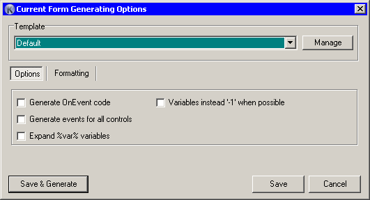

This dialog allows you to change current form generating options.

Those code options and formatting are the same as in the Code Generator and Code Generator Formatting settings. The only difference is that the options you set here apply only to current form, thus extending your configuring options. You can also choose templates here.
The actions you may take are “Save & Generate” code, “Save” settings without creating any code, or simply “Cancel” to leave.